You're about to turn an AI assistant into a motion designer, an animator and a sound editor, and you won't open a single editing app.
You've seen them on your feed: buttery-smooth animated reels, cinematic quote videos, little faceless characters acting out tips, watercolour trailers, explainers with charts that draw themselves. People keep asking in the comments "What app did you use?"
Most of those videos weren't edited at all. They were written. Someone described the video to Claude, and Claude wrote the code that draws every single frame, composed the sound, checked its own work and delivered a finished MP4.
This guide shows you exactly how to do it, step by step, from creating your first GitHub account to publishing your first reel. No coding knowledge needed. If you can copy, paste and describe what you want, you can do this.
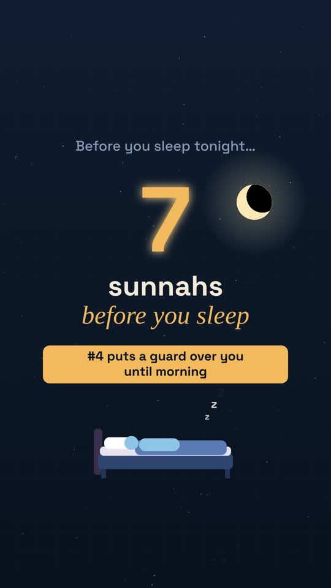
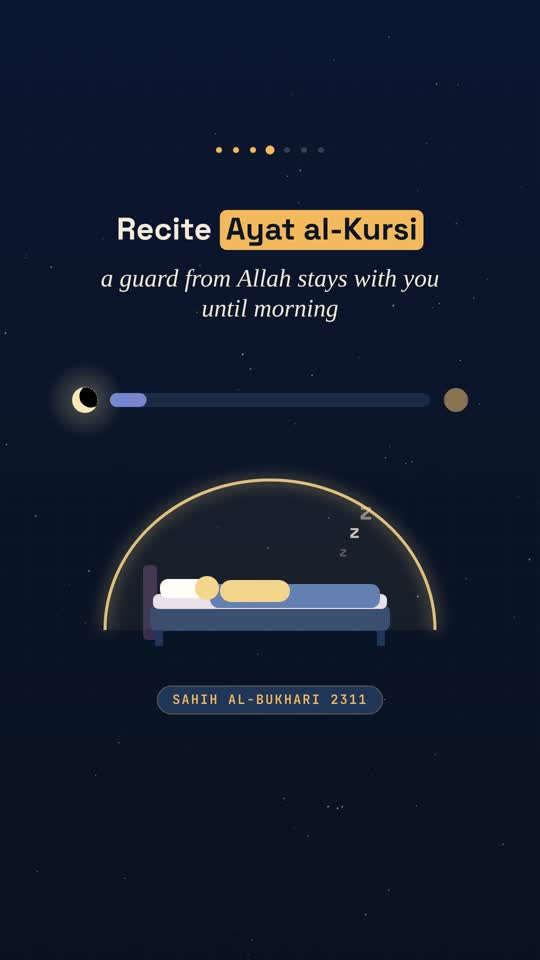
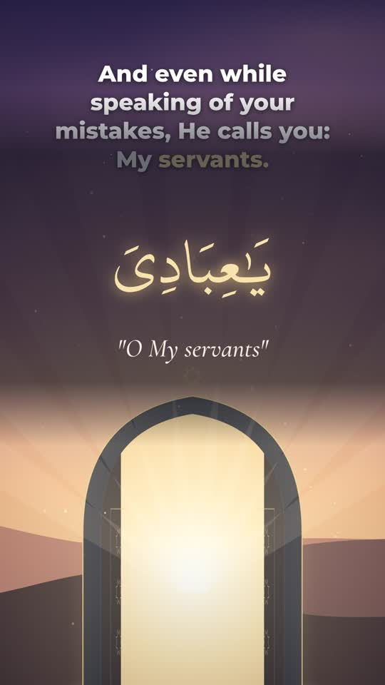
Frames from reels made with the exact method in this book. No editing software, no stock footage, no designer.
What you'll be able to make
Social reels in 9:16: listicles with animated characters, cinematic quotes, "3 mistakes" videos, countdowns, myth-vs-fact.
Trailers and ads for your product, ebook, app, event or shop.
Explainers: how something works, animated charts, maps, timelines.
Art-style shorts: watercolour, paper-cut, pixel art, neon, low-poly 3D, ink and dozens more.
Lyric videos and audiograms synced to your audio.
With music or without, with a natural-sounding voice-over or none, with real sound effects placed on the exact frame.
What this book is not
It's not about realistic AI footage of people. Claude draws with code, so it shines at motion design, illustration, typography and animation: the styles that dominate reels and ads today. If you need a realistic human on camera, you still need a camera (or a different kind of AI tool).
How to use this book
Part 1 explains what's really happening, in plain English. Read it once: it will make everything else make sense.
Part 2 is the one-time setup. Follow it in order, with this PDF open next to your browser. Allow about 30 minutes.
Part 3 walks you through your first video and how to direct Claude like a pro.
Part 4 covers voice-over and sound.
Part 5 is the prompt library: 44 ready-to-copy prompts with variations. Come back to it every time you need an idea.
Part 6 covers publishing, growing, and fixing anything that goes wrong.
Tip
Every prompt in this book is also included as a plain-text file (prompt-library.md) with your download, so you can copy them without fighting PDF line breaks.
Good to know
Screens change. The menus described here match Claude Code on the web at the time of writing. If a button has moved or been renamed, look for the closest match, or simply ask Claude in the chat: "Where do I find the setting for X?" It can read its own documentation.
Part 1
Understand the magic
Five minutes of theory that will save you hours of trial and error.
How Claude makes a video
Claude doesn't "generate" a video the way image AIs do. It builds one, frame by frame, like a tiny animation studio.
When you ask Claude Code for a video, it works like a team of specialists who never get tired:
The five stages Claude goes through for every video you request.
The director turns your request into a storyboard: scenes, timings, on-screen text, sound cues.
The animator writes a web page that can draw any moment of the film. Ask it for second 12.4 and it draws exactly that frame. This is what makes the result smooth and precise.
The camera is a hidden web browser that visits that page and takes a picture of every frame: 30 per second, so a 60-second reel is 1,800 pictures.
The sound team builds the audio: a voice-over from a text-to-speech model, real recorded sound effects, a synthesised score, or silence and ambience.
The editor (a free tool called ffmpeg) stitches the pictures and the sound into one MP4 file.
Along the way, Claude looks at its own work. It renders a few key frames, inspects them like a picture, notices that a title overlaps an image or that text is hard to read, fixes it and checks again. With the right tools it can even listen to the soundtrack and critique it.
Not great: photorealistic people and real-world footage. If you need those, film them or use a dedicated video-generation tool, and you can still ask Claude to edit, caption and brand them.
Tip
Think "animated", not "filmed". The most viral faceless accounts use exactly the styles Claude is best at.
What you need
Three accounts, one browser, zero installs.
1. A Claude plan that includes Claude Code in the cloud
You'll use Claude Code on the web at claude.ai/code. Cloud sessions are available on the paid Pro, Max and Team plans (and some Enterprise seats). Check current prices and what each plan includes at claude.com/pricing.
Pro is enough to start and learn.
Max gives much more room if you plan to produce several videos a day: video work is long, detailed work.
Everything runs on Anthropic's computers in the cloud, so your laptop's speed doesn't matter. An old PC works perfectly; it only needs a browser.
2. A free GitHub account
GitHub is where your projects live. Think of it as a Google Drive for projects. Claude's cloud sessions are wiped when they end, so anything worth keeping (your videos, your templates, your settings) gets saved to GitHub. Part 2 shows you how to create an account in five minutes.
3. The starter kit (free, included)
This book comes with a ready-made starter kit: a collection of skills (instruction packs for Claude), video templates and an installer, all assembled from excellent open-source projects. You'll install it in one line.
Optional
An Instagram, TikTok or YouTube account to publish to.
An ElevenLabs account if you ever want premium voices (the free voices in this book are already good).
Good to know
What's a "skill"? A skill is a folder of instructions and tools that teaches Claude a specialised job, like "how to place sound effects on a video" or "the rules of good motion design". Claude loads the right skill automatically when your request needs it.
The words you'll see (mini glossary)
Word
What it means for you
Repository (repo)
A project folder on GitHub. Your "studio" will be one repo.
Session
One conversation with Claude Code, running on its own cloud computer.
Environment
The saved settings for those cloud computers: internet access and a startup script.
Setup script
A few lines that run when a session starts, used here to install the starter kit.
Render
The moment Claude draws every frame and builds the MP4.
Push
Claude saving files to your GitHub repo.
Context
Claude's working memory for one conversation. It fills up over long sessions.
Part 2
Set up your studio
A one-time, 30-minute setup. Keep this PDF open next to your browser and follow along.
Repository name:my-video-studio (or any name you like).
Choose Private: only you will see it.
Tick Add a README file. Claude Code works with existing repositories, and the README makes sure yours isn't empty.
Click Create repository. Done.
Tip
Later, you can make one repo per brand or per account, for example faith-reels and shop-ads, each with its own style settings. Start with one.
Step 3 · Connect Claude Code to GitHub
This is where most beginners get stuck. Go slowly; you only do it once.
Go to claude.ai/code and sign in with your Claude account.
Claude Code asks you to connect GitHub. Follow the prompt: it opens GitHub's authorization page. Click Authorize, and GitHub sends you back to Claude Code.
Install the Claude GitHub App so Claude can work in your private studio repo. If onboarding offers it, accept. If not, open github.com/apps/claude/installations/new.
On the installation page, choose your account, then Only select repositories, pick my-video-studio, and click Install.
Back on claude.ai/code: on Pro and Max plans, Claude Code creates an environment called Default for you automatically. (On Team plans, a short form appears: keep the defaults and click Create & finish.)
The connection flow: claude.ai/code ⇄ GitHub authorization ⇄ Claude GitHub App on your studio repo.
Watch out
"My repository doesn't appear!" This almost always means the Claude GitHub App isn't installed on it. Repeat steps 3–4 and make sure my-video-studio is selected. You can add more repositories to the app later from the same page.
Step 4 · Tune your environment
Two settings make the difference between "it works" and "it works beautifully": internet access and the startup script.
Your environment is the saved setup for every cloud computer Claude uses. The Default one has Trusted network access: it can reach package registries and GitHub, but not the websites where free voices, sound libraries and fonts live. We'll fix that and add the starter kit.
Open the environment settings
On the new session screen at claude.ai/code, look at the row of controls under the message box. The first control is the environment selector.
Find Default under Cloud, hover over it and click the settings icon that appears on the right.
Simplified illustration of the environment dialog: Network access, Setup script, Environment variables.
Set Network access to Full
Select the Network access row and choose Full.
Level
What sessions can reach
Good for video?
None
Nothing
✗
Trusted (default)
Package registries, GitHub, cloud SDKs
Partly: no voices, sound libraries or fonts
Full
Any website
✓ Recommended
Custom
Your own list of domains
✓ For advanced users
Good to know
Prefer Custom? Allow at least: huggingface.co, cdn.jsdelivr.net, fonts.googleapis.com, fonts.gstatic.com, api.openverse.org, cdn.freesound.org, api.quran.com and api.alquran.cloud (for faith content), and keep the default list included.
Paste the setup script
Select the Setup script row and paste this single line:
git clone --depth 1 https://github.com/JimmyDamelio/claude-video-starter-kit /tmp/kit && sh /tmp/kit/install.sh
Then click Save changes.
From now on, every new session starts with the starter kit installed: the video skills, the motion-design and sound skills, the templates, plus ffmpeg and a headless browser if they're missing. It's quick by design, because setup scripts should finish in about five minutes.
Tip
The heavier tools (free voices and the "ears" that let Claude listen to audio) are installed on demand. When a video needs them, just say "install the media tools" and Claude runs sh /tmp/kit/install.sh --media. It takes 2–4 minutes.
Good to know
Changing settings during a session: click the small arrow after the session title at the top and choose Edit cloud environment.
Step 5 · Your first session: check everything
Two minutes to make sure the studio is ready, and to teach Claude your brand once and for all.
On claude.ai/code, click the repository selector under the message box and choose my-video-studio.
Pick a permission mode. Accept edits (or Auto, if you see it) lets Claude work without stopping for approval at every step, which is what you want for long video jobs.
Paste this prompt:
PROMPT 01Studio check
Check that my video studio is ready. Run `sh /tmp/kit/install.sh --doctor` and tell me in a short list what's installed and what's missing (skills, ffmpeg, headless browser, voices, sound tools). If something essential is missing, fix it. Don't create any video yet.
Teach Claude your brand (do this once)
Claude reads a file called CLAUDE.md at the start of every session in a repo. Put your brand in it, and every video comes out on-brand without you repeating yourself.
PROMPT 02Create my studio brief
Interview me to create my studio brief. Ask me, one short question at a time: my account/brand name, my niche and audience, the language of my videos, 3–5 brand colours (or let me pick from palettes you propose), my fonts (or propose some), the tone (e.g. calm, punchy, funny), whether I use music or not, voice-over or not, my usual formats (9:16 / 1:1 / 16:9), and any rules (things I never want to see). Then write it all into CLAUDE.md at the root of this repo, as clear instructions for future video sessions, and push it to GitHub.
Tip
Run this again whenever your brand evolves, or open CLAUDE.md on github.com and edit it directly.
Part 3
Your first video
From one prompt to a finished MP4, then how to direct Claude like a creative director.
The anatomy of a great video prompt
Claude can do a lot with very little, but the more precisely you describe the film, the closer the first version lands.
A weak prompt:
make a video about productivity
A strong prompt answers the questions a director would ask. Use these eight blocks, or just the ones you care about:
Block
What to say
Example
Goal
What the viewer should feel or do
"Make people save it and try tip #3 tonight"
Format
Ratio, length, platform
"9:16 Instagram Reel, 35–45 s"
Hook
The first 2 seconds
"Big '5' and 'habits that fix your mornings'"
Beats
The scenes, in order
"Hook → 5 habits, one scene each → recap → question"
Style
Look, colours, fonts, characters
"Flat pastel, faceless pill-shaped characters, cream on navy"
Text
On-screen words, subtitles
"Short titles with one highlighted keyword"
Sound
Music, voice, effects
"No voice. Soft UI pops on every appearance, light ambience"
Checks
What Claude must verify
"Check stills before the full render; keep text inside safe zones"
The master prompt (fill in the brackets)
PROMPT 03The master template
Make a [9:16 Instagram Reel / 1:1 post / 16:9 YouTube video] of [LENGTH] seconds about [TOPIC].
Goal: [WHAT THE VIEWER SHOULD FEEL OR DO].
Hook (first 2 seconds): [HOOK LINE + VISUAL].
Beats: [SCENE 1] → [SCENE 2] → [SCENE 3] → [ENDING / CALL TO ACTION].
Style: [STYLE], palette [COLOURS], fonts [FONTS OR "you choose"], [CHARACTERS / ILLUSTRATIONS].
On-screen text: [SUBTITLES / TITLES / KEY WORDS HIGHLIGHTED], large and readable on a phone, inside the safe zone (nothing important in the top 12% or bottom 20%).
Sound: [MUSIC STYLE or "no music"], [VOICE-OVER: voice + language, or "no voice"], [SOUND EFFECTS].
Facts: use only information I give you or that you verify from a reliable source; show sources on screen if relevant.
Process: storyboard first and show it to me, then render key stills and check them yourself, then render the full video at 30 fps, then check the final contact sheet. Save the MP4 in videos/ and push it to GitHub.
Tip
"Storyboard first and show it to me" is the most valuable sentence in any video prompt. You catch a wrong idea in 30 seconds instead of after a full render.
Your first video in 15 minutes
Let's make a real reel now. Pick any topic you know well.
Open claude.ai/code, choose your my-video-studio repo and Accept edits mode.
Paste the prompt below, replacing the topic.
Read the storyboard Claude proposes. Reply "go" or ask for changes.
Wait while Claude renders. A 30–60 s reel usually takes a few minutes. You can close the tab: the session keeps working in the cloud.
PROMPT 04My first reel
Make a 25-second 9:16 Instagram Reel: "3 [TOPIC] tips nobody tells you".
Hook: a giant "3" that pops in, with the title. Then one scene per tip (6 s each): a short bold title with one highlighted keyword, an italic one-line explanation, and a simple animated illustration with flat, faceless pastel characters. End with "Which one will you try first?".
Style: dark navy background, warm amber highlight, cream text, modern grotesk font plus an elegant italic serif for accents.
Sound: no voice, no music: soft real UI sound effects (pops, ticks, whooshes) on every appearance, plus a quiet ambience.
Storyboard first, then check key stills yourself, then render at 30 fps, check the final contact sheet, save the MP4 in videos/ and push it to GitHub.
What you'll see Claude do
Storyboard: a table of scenes with timings and text.
Stills check: it renders a handful of frames, looks at them (yes, it can see images), and fixes overlaps, empty moments or unreadable text.
Sound: it finds or makes the audio and places each effect on its frame.
Full render and a final contact sheet: a grid of frames from the finished video, its last quality check.
Push: the MP4 lands in your repo.
Download your video
On github.com, open the MP4 and click Download raw file.
From GitHub (always works): open your repo on github.com → videos/ → click the MP4 → click the Download raw file button (the down-arrow icon at the top right of the file).
From the chat: if Claude shows a file card with a download button, use it.
To your phone: download on your computer, then send it to yourself (Google Drive, Telegram "Saved Messages", AirDrop…), or open github.com on your phone.
Watch out
Cloud sessions are wiped after a period of inactivity. Anything not pushed to GitHub can disappear. If you're not sure, ask: "Is everything pushed?"
Direct like a pro
The first render is a draft. The magic is in the second and third.
Say what you see, and where
Claude fixes precise feedback instantly. Vague feedback ("make it better") gets random changes.
Instead of…
Say…
"It's ugly"
"The title at 0:08 overlaps the illustration. Move the illustration down 100 px."
"Too slow"
"Each scene feels long. Cut scenes to 4 s and make the words pop in faster."
"Not readable"
"The subtitle on the light background has low contrast. Add a dark band behind it."
"More dynamic"
"Add a 1.1× scale pop with overshoot on each title word and a whoosh on each scene change."
"Different vibe"
"Keep the layout but switch to a cream background with coral and teal accents."
Useful vocabulary
Ease / easing: how motion speeds up and slows down. "Ease-out on entrances, ease-in on exits."
Overshoot / bounce: the playful "pop" past the final size. "Back-ease with a slight overshoot."
Stagger: elements appearing one after another. "Stagger the list items by 0.15 s."
Safe zone: where the app's interface doesn't cover your video. "Keep text out of the bottom 20%."
Contact sheet: a grid of frames to review the whole film at a glance. "Show me a contact sheet."
Beat / cue: a moment where something happens. "Put a soft hit on every cue."
Iteration prompts that work
PROMPT 05Review pass
Before changing anything, render a contact sheet of the current video (one frame every 2 seconds) and critique it like a senior motion designer: readability on a phone, empty moments, overlaps, pacing, contrast, safe zones. List the 5 most important fixes, then apply them and show me a new contact sheet.
PROMPT 06Make it more addictive
Make this reel more addictive without making it longer: a stronger first 2 seconds (big number or bold claim), something moving at all times, a sound on every appearance, a progress indicator so viewers know how many items are left, and a final recap screen people want to save.
PROMPT 07Turn it into a template
Turn this video into a reusable template in templates/[NAME]/: keep the style, timings, sound design and code, but move all the text and data into one simple file I can edit for the next episode. Write a short README explaining how to make the next one, and push.
Keep sessions focused
One video per session. Long sessions fill Claude's working memory (the context). Start a new session for the next video.
Use /compact to summarise a long conversation, or /clear to start fresh in the same session.
For complex films, you can raise the reasoning effort with /effort, for example /effort high. Higher effort means more detail and more usage.
Videos with many scenes can take a while. Let Claude work, and come back later.
Good to know
Your plan has usage limits that reset over time. Rendering itself happens on the cloud computer, but every message, image check and fix uses your plan. The "storyboard first" and "check stills first" habits save a lot of usage.
Three real videos, dissected
All three were made with the exact setup in this book. Here's what made each one work.
1 · A watercolour launch trailer for an ebook (30 s, 16:9)
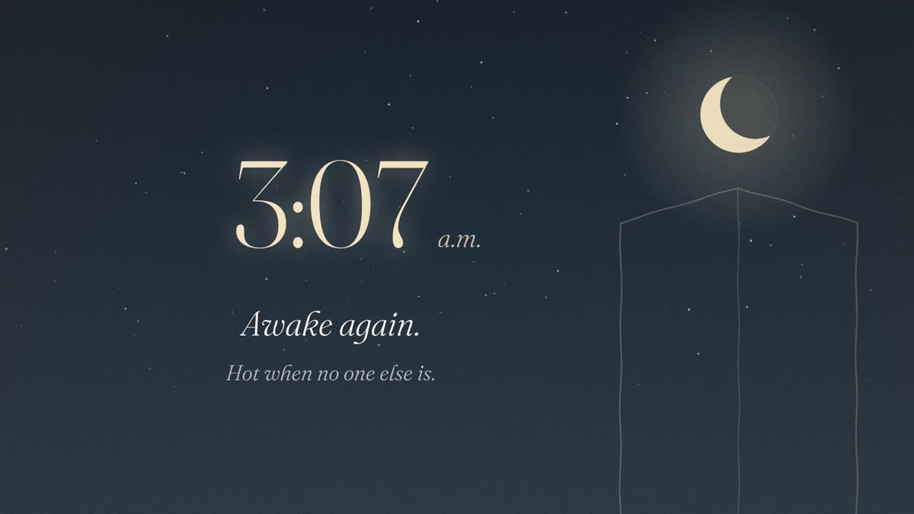
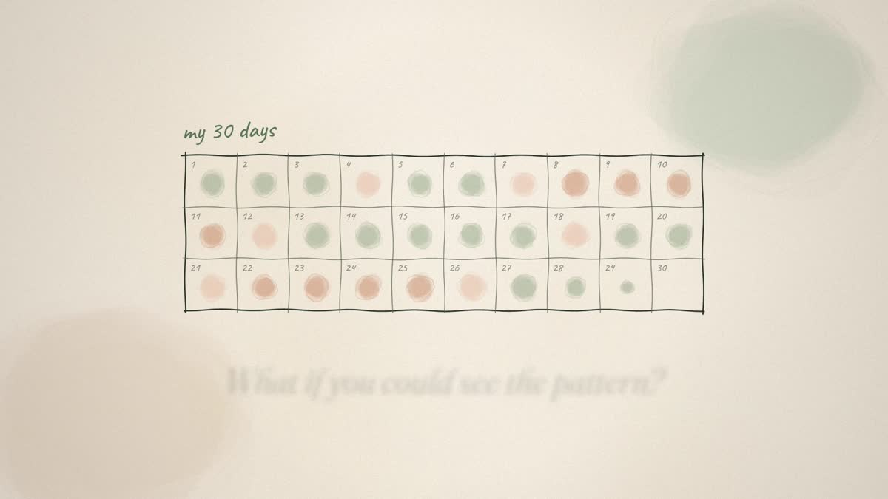
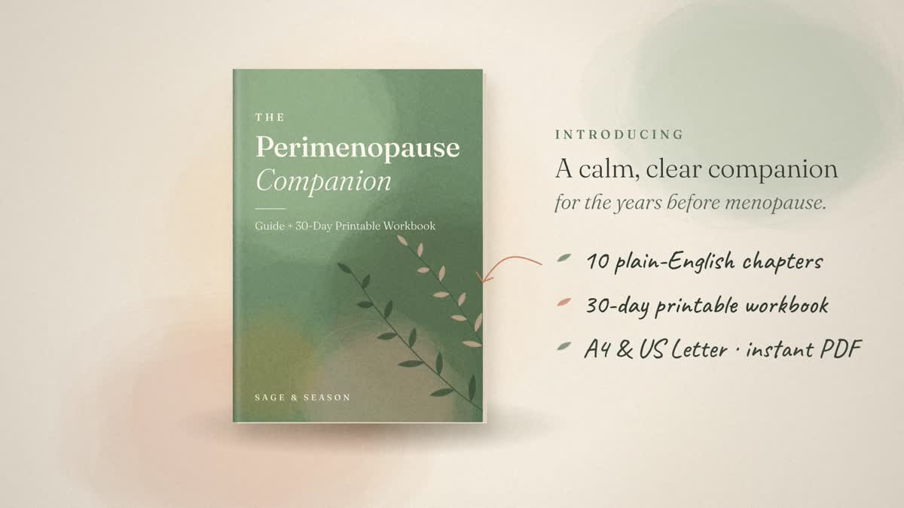
Story: a 3 a.m. wake-up (the problem) → floating words of what the reader feels → a 30-day grid where a pattern gets circled (the "aha") → the book appears → proof → a calm end card with price and link.
Style: watercolour washes, slightly "boiling" ink lines, paper grain, a slow camera push. The palette came from the book's cover.
Sound: a soft piano score and chimes synthesised in code, with paper "swooshes" on the transitions.
Lesson: the trailer tells the reader's story, not the product's. The product only appears at the halfway point.
2 · A cinematic Qur'an verse reel (46 s, 9:16)
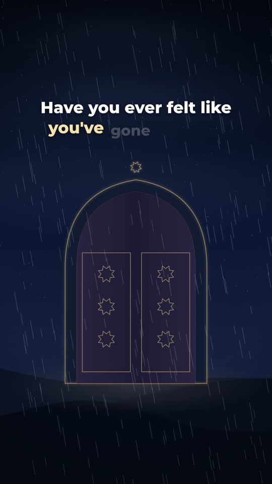
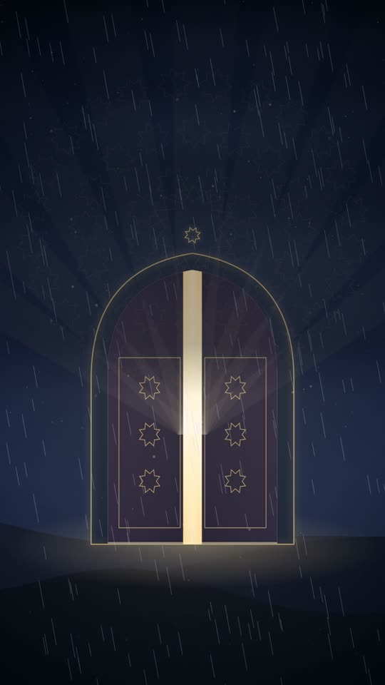
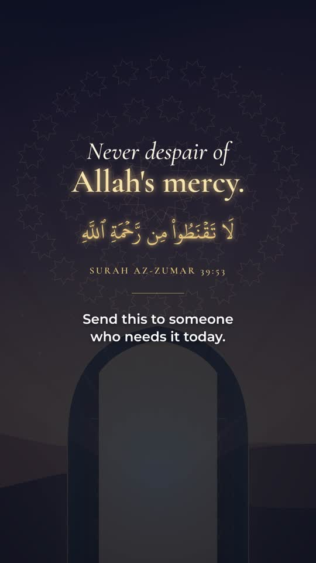
Story: a rainy night and a closed door ("Have you ever felt like you've gone too far?") → the door opens onto light → the verse appears word by word → dawn rises and the rain stops → "ALL", then "My servants" → an end card with a share prompt.
Accuracy: the Arabic was fetched from the quran.com API in the encoding made for the official KFGQPC font, and the translation was quoted exactly. The first font tried misplaced two marks; checking the rendering at high zoom caught it before publishing.
Sound: real CC0 recordings only (rain with distant thunder, wind, a creaking door, birds at dawn), no music, and a warm female voice for the English meaning, with "Allah" pronunciation fixed.
Lesson: a visual metaphor (a closed door that opens) makes an abstract message instantly felt.
3 · A faceless "7 sunnahs before you sleep" listicle (61 s, 9:16)
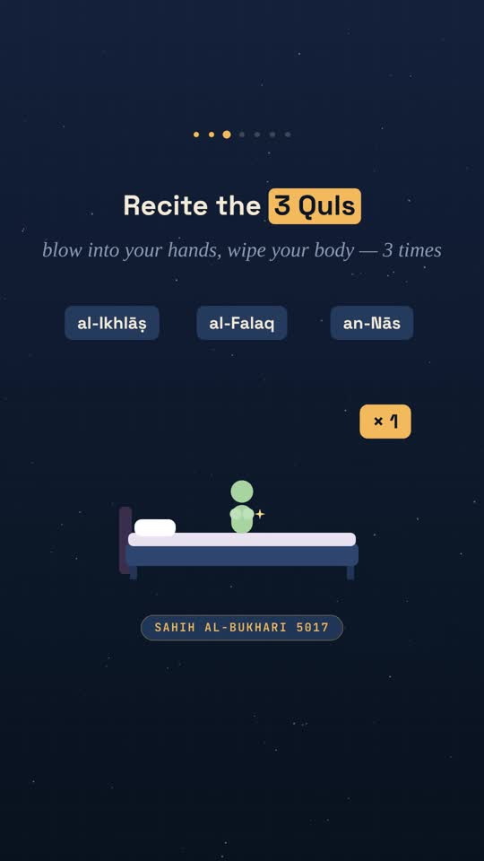
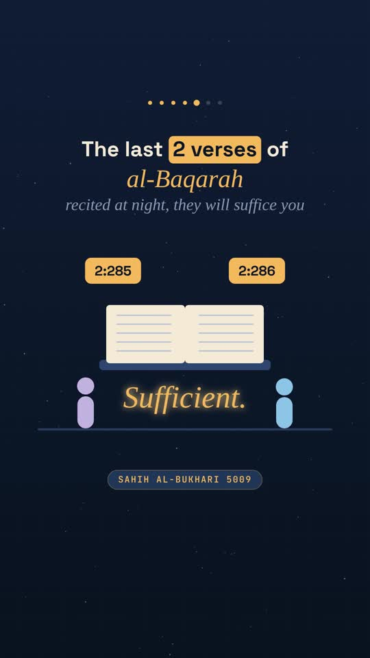
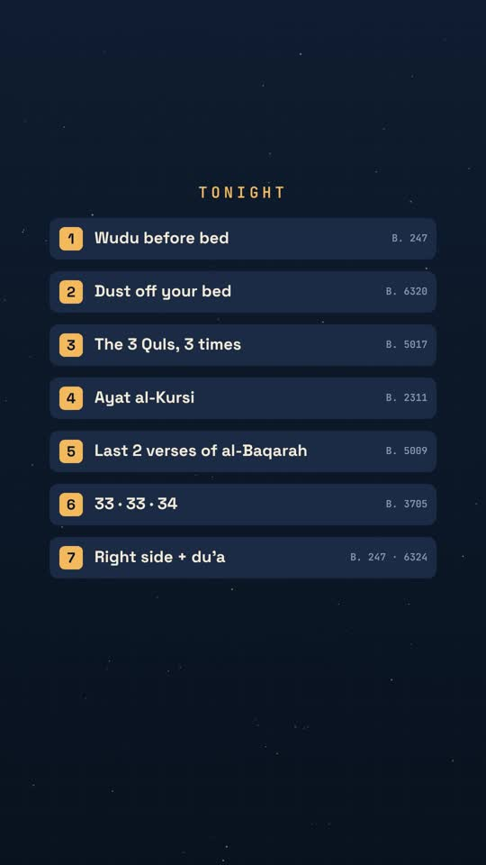
Hook: a giant "7" plus "#4 puts a guard over you until morning". That curiosity line keeps people watching to item 4, and it's an authentic quote from the source.
Retention: progress dots, something moving at all times, a keyword in an amber box in every title, and a recap checklist people save.
Characters: faceless pastel "pill people" (round head + capsule body) that wash, shake out a bed, sit, recite and sleep.
Sound: no voice, no music. 72 small CC0 interface sounds placed on the film's own cue list (about 1.2 per second), plus night crickets.
Lesson: this format is infinitely repeatable. Save it as a template and every next episode takes minutes.
Tip
Ask Claude to "analyse this reference video and make the same kind of video about [TOPIC] with my brand colours", and attach the MP4. Claude can study a video frame by frame and analyse its soundtrack, then reproduce the recipe without copying the content.
Part 4
Sound that sells
Voice-overs, real sound effects and silence, and how Claude can actually listen to its own mix.
Voice-over with free voices
Natural-sounding narration in English, French and a dozen other languages, generated in seconds, at no extra cost.
The starter kit uses two free, open-source voice engines that run on Claude's cloud computer:
Engine
Strengths
Example voices
Kokoro
The most natural. Many English voices, plus French, Spanish, Italian, Portuguese, Hindi, Japanese, Chinese
To use them, first say "install the media tools" (once per session, 2–4 minutes). Then just describe the voice you want in your prompt.
PROMPT 08Voice audition
Before making the video, generate the same 2-sentence line with 4 different voices (warm female, calm male, British female, energetic) and put the clips in audio/auditions/ so I can listen and choose. Line: "[YOUR LINE]".
Make the voice drive the edit
The best-paced videos are timed to the voice, not the other way around. Ask Claude to generate the narration first, measure each sentence, and then set the scene timings, with word-by-word subtitles synced to the speech.
PROMPT 09Voice-first video
Write a 35-second voice-over script for [TOPIC] in a warm, conversational tone (short sentences, one idea each). Generate it with a warm female voice at a slightly slow pace. Then build the 9:16 video around the voice: one scene per sentence, subtitles that highlight each word as it's spoken, and visuals that change on the voice's natural pauses. Duck any background sound under the voice.
Tip
Pronunciation fixes. If a name or foreign word sounds wrong ("Al-lah" read as "Ala", a brand name, a city), tell Claude: "The voice mispronounces X. Fix it phonetically." Text-to-speech engines accept phonetic spellings, and Claude knows how to apply them.
Watch out
Some platforms ask you to label realistic AI-generated audio. On Instagram and Facebook, use the AI info label when you publish a video with an AI voice. It's honest, and it protects your account.
Real sound effects (and no-music videos)
The difference between "made by AI" and "made by a studio" is often just the sound.
Where the sounds come from
Openverse: a search engine for over 800 million openly licensed works, including tens of thousands of sound effects from Freesound. The starter kit's openverse skill searches it, prefers CC0 (no attribution needed) and keeps a CREDITS.csv of everything it downloads.
Bundled UI sounds: 78 small interface sounds (pops, ticks, whooshes, chimes) in 12 styles, all CC0. Perfect for animated listicles.
Synthesised sound: Claude can also compose music and effects in code (soft pads, piano, chimes). It's great for calm trailers, but recorded sound usually feels more premium.
Videos without music
Many creators prefer no music: faith content, calm educational content, or simply to stand out. A good no-music soundtrack combines:
Ambience: rain, night crickets, wind, a café, birds at dawn, at a low level.
Foley and effects: a door creaking open, pages turning, a soft impact on the key moment.
UI cues: a pop on every element that appears. This is what makes listicles feel "addictive".
Voice, or nothing: text on screen can carry the whole story.
PROMPT 10Real-sound design
Design the soundtrack with real recordings only, no music: find CC0 sounds on Openverse for [AMBIENCE, e.g. light rain at night] and [EFFECTS, e.g. a wooden door opening, a soft deep impact, birds at dawn]. Pick the best candidates by listening to them with earshot, place each effect on the exact frame of its visual event, keep the ambience low under the voice, and save the credits in CREDITS.csv.
Let Claude listen
Claude can't hear, but the starter kit gives it ears.
earshot is an open-source listening tool. It turns sound into evidence Claude can reason about:
describe what a sound file sounds like ("a creaking door", "crickets at night");
rank candidate sounds against a description, to pick the best whoosh out of ten;
find the cleanest moment inside a long recording;
critique a finished video's soundtrack against professional launch films: loudness, sync to picture, empty openings, endings that fall flat, harshness, stereo width, and whether it sounds synthetic.
PROMPT 11Sound review
Run an earshot critique on the final video and explain the results to me in plain English. Fix every issue that matters for this style (ignore "no music" if the video is intentionally music-free), then run the critique again and show me the before/after scores.
Good to know
earshot compares your film to music-led launch videos, so it always flags a missing music track. If no music is your choice, tell Claude to ignore that one point.
Loudness that fits social media
Reels and TikToks are watched on phones, often with the sound low. Ask for around −14 LUFS integrated (the standard for streaming platforms), peaks below −1 dBTP, and voices that stay clearly above the background. Claude can measure and fix this automatically. Just mention it once in your studio brief.
Part 5
The prompt library
Ready-to-copy prompts for every kind of video, each with variations. Replace the [BRACKETS] and go.
How to use the library
Every prompt is a complete brief. Copy it, fill in the brackets, and add one line of your own if you want.
[BRACKETS] are yours to fill. Everything else can stay as is.
Each prompt ends with the habits that make results reliable: storyboard first, check stills, push the MP4.
Under many prompts you'll find variations: one-line swaps that change the format, mood or style.
Your studio brief (CLAUDE.md) adds your brand automatically. If you haven't made one, add your colours and fonts to the prompt.
Mix-and-match modifiers
Add any of these lines to any prompt:
To change…
Add…
Format
"Make it 1:1 for the feed" · "16:9 for YouTube" · "Make all three: 9:16, 1:1 and 16:9"
Length
"Cut it to 15 seconds for a TikTok hook" · "Extend to 60 s with two more examples"
Pace
"Fast cuts every 1.5 s" · "Slow and cinematic, let each scene breathe"
Mood
"Calm and hopeful" · "Punchy and funny" · "Luxury and minimal" · "Nostalgic"
"Faceless pill-shaped characters" · "Simple stick figures" · "A cute round mascot named [NAME]" · "No characters, just shapes and type"
Text
"Big bold words, one per beat" · "Elegant serif subtitles" · "Handwritten notes and arrows"
Sound
"No music, real ambience + UI pops" · "Soft piano score" · "Upbeat electronic, 120 BPM" · "Voice-over with a warm female voice"
Language
"All on-screen text in French" · "English voice, Arabic + English subtitles"
Quality
"/effort high, and do two review passes before the final render"
Social reels that stop the scroll
PROMPT 12Faceless listicle with characters
Make a 45–60 s 9:16 Instagram Reel: "[NUMBER] [THINGS] that [PROMISE]". Hook (0–2.5 s): a giant number popping in, the title, and a highlighted curiosity line: "#[N] [INTRIGUING DETAIL]". Then one 6 s scene per item: a short bold title with ONE highlighted keyword in a coloured box, an italic one-line explanation, and a small animated scene with faceless pastel characters (round head + capsule body) acting it out. Show progress dots so viewers know how many are left. End with a recap checklist of all items ticking one by one, then a question: "Which one are you starting today?". Style: [PALETTE], bold grotesk + italic serif accents. No voice. Sound: a soft pop on every appearance, a whoosh on scene changes, quiet ambience. Storyboard first, check stills, render at 30 fps, push the MP4.
Variations: "Make the characters do the action literally (walking, sleeping, cooking)" · "Add a source tag under each item" · "Use stick figures drawn with a hand-drawn boil effect".
PROMPT 13Cinematic quote reel
Make a 30–40 s 9:16 cinematic reel around this quote: "[QUOTE]" by [AUTHOR]. Story: an emotional setup (2–3 short lines that describe a feeling the viewer knows), a visual turning point (a door opening, sunrise, rain stopping, light breaking through), then the quote revealed word by word in large elegant type, then one line of reflection, then an end card with the author's name. Visuals: atmospheric illustrated scene ([SCENE, e.g. a lone lantern in the desert at night]), slow camera drift, light particles. Sound: [voice-over with a calm warm voice / no voice], real ambience and one soft impact on the reveal. Storyboard first.
Variations: "Night → dawn colour transition on the turning point" · "Typewriter reveal instead of word fade" · "Black and white with one accent colour".
PROMPT 143 mistakes to avoid
Make a 30 s 9:16 reel: "3 [TOPIC] mistakes that [CONSEQUENCE]". Each mistake gets a red ✗ stamp animation, a short title and a quick visual of the mistake; then the fix appears with a green ✓, a swipe transition and the better version. End: "Save this before your next [ACTIVITY]". Punchy pacing, bold condensed type, high contrast. UI sound effects on every stamp. Storyboard first, then render.
PROMPT 15Myth vs fact
Make a 30 s 9:16 reel with 3 myth-vs-fact rounds about [TOPIC]. Each round: "MYTH" card slides in with the myth, a 1 s pause, the card flips (3D flip) to "FACT" with the truth and a one-line source. Use a split-colour layout (myth = muted grey, fact = vivid [COLOUR]). Countdown dots 1/3, 2/3, 3/3. Only use facts I give you or that you verify; show the source on screen. Sound: flip whoosh + soft ding on each fact.
PROMPT 16Countdown ranking
Make a 40 s 9:16 "Top 5 [THINGS]" countdown from #5 to #1. Each entry: a huge number that slams in with a bass hit, the name, one reason, and a simple animated icon or illustration. Build suspense before #1 (darker background, a short drum roll from real recordings, then a bright reveal). End: "Agree? Comment your #1". Bold, energetic, [PALETTE].
PROMPT 17Stat shock
Make a 20 s 9:16 reel built on one surprising number: [STAT + SOURCE]. 0–3 s: the number counts up from 0 with ticking sounds and lands with an impact. 3–12 s: what it means, shown with a simple animated visual (dots filling a grid, a bar growing, a clock). 12–17 s: what the viewer can do about it. 17–20 s: the source and "Follow for more". Clean data-journalism look, one accent colour.
PROMPT 18Before / after transformation
Make a 25 s 9:16 before/after reel about [TRANSFORMATION, e.g. a messy morning routine → a calm one]. Left/right or top/bottom split; a wipe slider moves across to reveal the "after". Show 3 concrete changes as labelled callouts with arrows. End with "Try it for 7 days". Satisfying motion, soft clicks on each callout.
PROMPT 19Kinetic typography hook
Make a 15 s 9:16 kinetic typography reel from this text: "[3–5 SHORT LINES]". Each word appears on the beat with varied scale, weight and position (some words huge, some tiny), with snappy easing and occasional colour inversions. Keep it readable: max 3 words on screen at once. [Soundtrack: punchy electronic loop at 120 BPM / no music, typing and impact sounds]. Make the last line stay on screen for 2 s.
PROMPT 20Day-in-the-life timeline
Make a 40 s 9:16 animated "a day in the life of a [ROLE]" reel. A clock in the corner advances through the day; each time stamp gets a quick illustrated scene with a faceless character (wake up, work, lunch, …). Use a soft colour shift from morning to night. Add a funny or honest caption under each scene. Light ambience that changes with the time of day (birds, office hum, evening crickets).
PROMPT 21Interactive question / poll
Make a 20 s 9:16 reel that asks viewers a question: "[QUESTION]?" with 2–4 animated answer options (A, B, C) as cards. A timer bar runs for 5 s, then one answer is revealed with an explanation, OR (if there's no right answer) end with "Comment your letter!". Game-show energy: bright colours, bouncy animations, buzzer and ding sounds from real recordings.
Make a 30 s 16:9 launch trailer (plus a 9:16 version) for my product "[NAME]": [ONE-LINE DESCRIPTION], price [PRICE], link [URL]. Story: 1) the viewer's problem in one relatable scene, 2) "What if…" turning point, 3) the product revealed (a clean 3D-ish mock-up of the cover/screens with a soft shadow and a gentle float), 4) 3 benefits as animated callouts, 5) proof (numbers, testimonials or "what's inside"), 6) end card: name, price, link. Use only claims I give you. Style: [STYLE + PALETTE]. Sound: [soft piano / upbeat / no music + real effects]. Storyboard first.
Variations: "Watercolour and ink style with hand-drawn arrows" · "Dark luxury: black, gold, slow reveals" · "Add a 6 s cut-down for ads".
PROMPT 23App / SaaS launch video
Make a 40 s 16:9 product launch video for [APP NAME], an app that [WHAT IT DOES]. Show stylised UI mock-ups (not screenshots) of 3 key screens: [SCREEN 1], [SCREEN 2], [SCREEN 3], animated as if someone is using them (cursor, taps, cards sliding, numbers updating). Open with the pain point, end with the logo and "[CALL TO ACTION]". Clean modern look, [BRAND COLOURS], smooth easing, subtle depth and shadows. Modern electronic score at 110–120 BPM with whooshes and UI clicks synced to the motion.
PROMPT 24Feature explainer (one feature, 20 s)
Make a 20 s 9:16 reel explaining one feature of [PRODUCT]: [FEATURE]. Structure: "Did you know you can [BENEFIT]?" → 3 steps shown on a simplified phone mock-up (tap, swipe, result) with numbered highlights → the result → "Try it today". Keep text short, add a progress bar across the bottom of the safe zone.
PROMPT 25Sale / promo announcement
Make a 15 s 9:16 promo for [OFFER, e.g. -30% this weekend] at [SHOP]. Bold, high-energy: a big percentage slams in, products (from my descriptions or simple illustrations) fly in on a grid, a countdown timer ticks, end with the code [CODE] and the link. Retro-pop style with halftone dots and thick outlines. Cash-register and pop sounds.
PROMPT 26Animated testimonial card
Make a 20 s 9:16 testimonial video from this review: "[REVIEW]" — [NAME, ROLE]. A clean card with 5 stars that fill one by one, the quote typed in with key words highlighted, the person's initials in a circle (no fake photos), and the product name at the end. Calm, trustworthy palette. Soft ticks on each star.
PROMPT 27Logo sting / channel intro
Make a 5 s logo sting for [BRAND NAME] in 16:9 and 9:16. The logo is built from [SHAPES / LETTERS] that assemble with satisfying motion (overshoot, then settle), a light sweep across it, and the tagline "[TAGLINE]" fading in. One signature sound: [a soft whoosh + chime / a deep impact / a playful pop]. Export a version with transparent background too (WebM with alpha) if possible.
PROMPT 28Event promo with countdown
Make a 25 s 9:16 promo for [EVENT] on [DATE] at [PLACE/ONLINE]. Show what people will get (3 animated highlights), the speakers or guests as stylised initial badges, a live-feeling countdown "[N] days left", and the sign-up link. Energetic but clear; ticking clock and crowd ambience at low level.
PROMPT 29Pricing explained in 30 s
Make a 30 s 16:9 explainer of my pricing: [PLANS + PRICES + WHAT'S INCLUDED]. Animate the plan cards rising like a bar chart, highlight the recommended plan with a glow and a "Most popular" ribbon, and show a quick comparison of 3 key features with ticks and crosses. End with "[CALL TO ACTION]". Clean SaaS style.
Art styles
Same story, different worlds. Use these as the "Style" part of any prompt, or as complete short films.
PROMPT 30Watercolour & ink
Make a 30 s [FORMAT] short film about [SUBJECT] in a hand-made watercolour and ink style: soft layered colour washes with darker edges on warm paper texture, ink lines that "boil" slightly (redrawn 8 times per second), gentle film grain and vignette, slow camera push. Transitions: watercolour blooms and brush wipes. Palette: [e.g. sage, blush, terracotta, cream]. Soft piano and real paper sounds.
PROMPT 31Paper cut-out
Make a 25 s [FORMAT] video about [SUBJECT] in a layered paper cut-out style: flat coloured paper shapes with visible thickness and soft drop shadows, parallax between layers, slight paper texture, elements that pop up like a pop-up book. Palette: [COLOURS]. Sound: paper rustles, soft pops, light music box melody.
PROMPT 3216-bit pixel art
Make a 20 s 9:16 pixel-art video (16-bit console style, 320×568 virtual resolution scaled up with sharp pixels) about [SUBJECT]: a tiny character walking through [WORLD], collecting [ITEMS] that each reveal a tip. Retro UI frames, score counter, chiptune-style sound effects.
PROMPT 33Neon synthwave
Make a 20 s [FORMAT] synthwave video for [SUBJECT]: purple-pink gradient sky, a glowing grid floor scrolling toward the horizon, a striped retro sun, chrome text with neon glow and scanlines. Pulsing 100 BPM retro synth beat; text hits on the downbeats.
PROMPT 34Low-poly 3D
Make a 25 s 9:16 low-poly 3D scene (three.js) about [SUBJECT]: a small floating island with [ELEMENTS], soft pastel lighting, gentle orbit camera, objects that grow from the ground with bouncy easing. Titles in clean sans-serif over the scene. Light ambience + soft pops.
PROMPT 35Clay / soft 3D
Make a 20 s 9:16 video in a soft "clay" 3D look (rounded shapes, matte pastel materials, soft shadows, tiny imperfections) showing [SUBJECT]. Objects squash and stretch when they land. Cute, tactile sound effects (boops, squishes).
PROMPT 36Whiteboard explainer
Make a 45 s 16:9 whiteboard-style explainer of [CONCEPT]: black marker lines drawn progressively on a white board, handwritten-style titles, simple icons and arrows, a few colour highlights in [COLOUR]. Explain it in 4 steps. Add a calm voice-over in [LANGUAGE] and marker squeak sounds when drawing.
PROMPT 37Retro risograph poster
Make a 15 s 9:16 animated poster for [EVENT / IDEA] in a risograph print style: 2–3 spot colours ([COLOURS]) with slight misregistration, grain texture, bold condensed type, shapes that slide and overlap. Loopable ending.
PROMPT 38Ukiyo-e woodblock
Make a 30 s 16:9 short in a Japanese ukiyo-e woodblock style about [SUBJECT]: flat colour areas, bold outlines, stylised waves and clouds, washi paper texture, slow parallax. Gentle traditional-sounding plucked melody (synthesised) and wind.
PROMPT 39Blueprint / technical
Make a 25 s 16:9 blueprint-style explainer of [PRODUCT / OBJECT]: white technical lines drawn on a blue grid, dimension arrows and callout labels that appear one by one, an exploded view that separates the parts, then reassembles. Mechanical click and drafting sounds.
PROMPT 40Minimal Swiss motion
Make a 15 s 9:16 minimal Swiss-design motion piece for [MESSAGE]: strict grid, big Helvetica-style type, red/black/white only, shapes that snap into place with precise easing. Very clean, no textures. Tight percussive sound design.
PROMPT 41Isometric city
Make a 30 s 9:16 isometric illustration video of [PLACE / BUSINESS / CITY]: buildings rise from the ground one by one, tiny cars and people move along roads, day turns to night with lights switching on. Labels pop up for [3 KEY POINTS]. City ambience that changes with the time of day.
Teach and explain
PROMPT 42How it works (explainer)
Make a 45 s 16:9 explainer: "How does [THING] work?" in 4 steps. Each step: a simple diagram that builds itself (shapes, arrows, labels), a one-sentence caption, and a highlight on the part being explained. Finish with a recap of all 4 steps on one screen. Calm voice-over in [LANGUAGE] synced to the steps, subtitles on. Only use facts I provide or that you verify.
PROMPT 43Data story with animated charts
Make a 30 s 9:16 data story from this data: [PASTE NUMBERS / CSV]. Find the most surprising insight, open with it as a big number, then show 2–3 animated charts (bars growing, a line drawing itself, a donut filling) with clear labels and one highlighted bar. End with the takeaway and the data source. Colour-blind-safe palette, readable on a phone.
PROMPT 44Animated map journey
Make a 30 s 16:9 animated map showing [JOURNEY / HISTORY / ROUTE]: a stylised map (no copyrighted map tiles), a path that draws itself from [A] to [B] to [C], labelled stops that pop up with a short fact each, and a moving dot with a soft trail. Old-paper or flat-modern style. Subtle wind and page sounds.
PROMPT 45History in 60 seconds
Make a 60 s 9:16 animated timeline of [TOPIC] from [START YEAR] to [END YEAR]: a horizontal timeline that scrolls, with 6–8 key moments each shown as a small illustrated scene and a one-line caption. Line-art style with one accent colour. Accurate dates only; mark anything uncertain. Light ambient score.
PROMPT 46Zoom from big to tiny
Make a 30 s 9:16 "powers of ten" style zoom from [START, e.g. a room] down to [END, e.g. atoms], with 6 levels, each with a label and one fact. Seamless zoom transitions, scale indicator on the side, wonder-filled ambient sound.
PROMPT 47Word of the day (language learning)
Make a 15 s 9:16 language-learning reel: the word "[WORD]" in [LANGUAGE], its pronunciation, its meaning in [YOUR LANGUAGE], and 2 example sentences that animate in with the key word highlighted. Add a clear voice reading the word and the examples in [LANGUAGE] (native-sounding voice). Clean flashcard design.
PROMPT 48Recipe in 30 seconds
Make a 30 s 9:16 animated recipe for [DISH]: flat illustrated ingredients drop into a bowl one by one with their quantities, then 4 quick steps with simple animations (stirring, baking timer, plating), then the final dish with "Save for later". Cosy warm palette, real kitchen sounds (chopping, sizzling, timer ding).
Faith and reminders (with verified sources)
Faith content deserves the highest accuracy. These prompts make Claude fetch every reference from a reliable source instead of writing it from memory.
Watch out
Never let any AI write a verse, hadith or scripture from memory. Always ask it to fetch the exact text from a reliable source and to show you the reference. Then double-check anything you're unsure about with a knowledgeable person.
PROMPT 49Cinematic Qur'an verse reel
Make a 45 s 9:16 cinematic reel about Qur'an [SURAH:AYAH]. First, fetch the exact Arabic text from https://api.quran.com/api/v4/verses/by_key/[SURAH:AYAH]?fields=qpc_uthmani_hafs and render it with the KFGQPC Uthmanic Hafs font (they're made for each other: waqf marks and the ayah number display correctly). Fetch the Sahih International translation from https://api.alquran.cloud/v1/ayah/[SURAH:AYAH]/en.sahih and quote it exactly. Never type Qur'anic text by hand. Story: an emotional setup (2–3 short lines), a visual turning point (light, dawn, a door opening), the verse revealed word by word in gold, the translation as elegant subtitles, one line of reflection, and an end card with the reference. No figures with faces. [No music: real ambience (rain, wind, birds) / soft nasheed-style vocals only]. [Optional: female or male voice reading the English meaning only, never a TTS recitation of the Arabic.] Storyboard first, check the Arabic rendering at high zoom before the full render.
PROMPT 50Hadith / sunnah listicle
Make a 60 s 9:16 listicle: "[N] sunnahs [CONTEXT, e.g. before you sleep]" in the faceless-characters style (round head + capsule body, pastel colours, no faces). Before writing any scene, verify each hadith by fetching its text from https://cdn.jsdelivr.net/gh/fawazahmed0/hadith-api@1/editions/eng-bukhari/[NUMBER].json (or the matching collection), and only include details the narration actually contains. Each scene: a title with one highlighted keyword, an italic one-liner, an animated scene, and a source tag like "SAHIH AL-BUKHARI 247". Hook: the big number + a curiosity line about one item. End with a recap checklist and "Which one are you starting tonight?". No voice, soft UI pops, light night ambience. Show me the list of hadiths with their texts before animating.
PROMPT 51Du'a / dhikr card
Make a 20 s 9:16 reel for the du'a "[TRANSLITERATION]" from [VERIFIED SOURCE]. Fetch the exact Arabic text from the source first. Show the Arabic in a beautiful Arabic font, the transliteration, the meaning, and when to say it. Elegant, calm design ([PALETTE]), gentle reveal animations, a soft chime. Include the source on screen.
PROMPT 52Ramadan / special-days countdown
Make a 15 s 9:16 countdown reel: "[N] days until [RAMADAN / EID / EVENT]". A crescent moon that fills a little more each day, lanterns that light up, the number counting down, and one short reminder of something to prepare. Warm night palette, soft ambience. Make the number and the reminder easy for me to change for each day (template).
PROMPT 53Mindful breathing (any audience)
Make a 60 s 9:16 guided breathing video using box breathing (4 s in, 4 s hold, 4 s out, 4 s hold) for 3 rounds: a soft shape that expands, holds and contracts with the timing, a gentle text guide ("Breathe in…"), a progress ring, calm gradient colours. Calm female voice guiding each phase, with soft ambience underneath.
Music and audio
PROMPT 54Lyric video with word-perfect sync
Make a 9:16 lyric video for my song (audio file: [FILE], lyrics: [PASTE LYRICS]). Align every word to the vocals (use speech recognition / forced alignment), detect the beats and sections, then show the lyrics karaoke-style: the current word lights up exactly when it's sung, scene changes on the downbeats, and a different visual motif for each section. Style: [STYLE]. Check sync on 3 random lines before the full render.
PROMPT 55Podcast audiogram
Make a 30 s 9:16 audiogram from this podcast clip ([FILE]): a live waveform that reacts to the voice, word-by-word captions with the key words highlighted, the episode title and guest name, and the show artwork from [IMAGE]. Clean branded design ([PALETTE]). End with "Full episode: [LINK]".
Part 6
Publish, grow, fix
Turn videos into reach, and get unstuck in minutes when something breaks.
The posting playbook
The algorithm rewards what people do with your video, not the tool you made it with.
What actually makes a reel travel
Watch time and rewatches. A strong first 2 seconds, and something moving all the time.
Shares, especially by DM. That's the strongest signal for reaching new people. "Send this to someone who…" works.
Saves. Useful, list-style content gets saved ("Save this for tonight").
Comments. Ask a question that takes zero effort to answer ("Comment the number you'll try").
Before you publish
[ ] Cover image: a clean frame with the big promise (ask Claude to export one: "export the frame at 2.5 s as cover.jpg").
[ ] Caption: hook line, value, sources if you cite any, one clear question, one call to save or share.
[ ] Hashtags: Instagram now caps posts and Reels at 5 hashtags. Pick 5 precise ones: 2 broad, 3 niche.
[ ] AI label if you used an AI voice.
[ ] Pinned comment with a question.
PROMPT 56Caption & hashtags
Act as my Instagram strategist. For the video we just made, write: 3 hook options for the first line of the caption, one full caption (value + question + save/share call to action, with sources if we cited any), the 5 best hashtags for reach in my niche, a pinned comment, a story idea to promote it, and the best time to post for my main audience in [COUNTRIES / TIME ZONES], converted to my time zone [YOUR CITY].
When to post
Your audience's evening is usually best. If your followers are spread across time zones, aim for the evening of your largest audience: the reel keeps being distributed for a day or two, so the next time zones pick it up later. After a few posts, check Insights → Your audience (top countries and most active times) and adjust.
Tip
Scheduling from a computer. You can publish Reels from instagram.com, and schedule them from Meta Business Suite (business.facebook.com), with an Instagram professional account (free). Posting from a browser doesn't reduce reach.
Build a series, not a one-off
Accounts grow on recognisable formats. Once a video performs, turn it into a template (Part 3) and make an episode every week: same style, new content. Your profile grid starts to look like a brand.
Troubleshooting
Every problem below happened to real users. Here's the fix.
Problem
Fix
My repository doesn't show up in Claude Code
Install the Claude GitHub App on it: github.com/apps/claude/installations/new → Only select repositories → tick your repo.
"Push refused" / "GitHub access denied"
Same cause: the app isn't installed on that repo, or your GitHub connection expired. Reconnect GitHub in claude.ai's connector settings, then reinstall the app on the repo.
Claude can't download voices, fonts or sounds (403, "tunnel failed")
Your environment's network access is Trusted. Set it to Full, or add the domains from Part 2 to a Custom list. Start a new session if needed.
"Setup script failed" / session won't start
Open the environment settings and check the setup script line was pasted exactly. The script must finish in about 5 minutes; keep heavy installs for "install the media tools".
Claude says ffmpeg or the browser is missing
Say "run sh /tmp/kit/install.sh --doctor and fix what's missing".
I can't find my video
Ask "Where is the MP4, and is it pushed to GitHub?" Then download it from github.com (Part 3). Files over 100 MB can't be pushed to GitHub: ask for a smaller file (CRF 20–23 or 1080p).
The session forgot everything
Cloud sessions are wiped after inactivity; the conversation is kept but files that weren't pushed are gone. Make pushing a habit: "push after every finished video".
"Context 80 % used" / Claude gets slower
One video per session. Use /compact to summarise or /clear to start fresh.
I hit my usage limit
Limits reset over time. Save usage with "storyboard first", "check stills before full render" and shorter sessions. Bigger plans give more room.
Text is cut off or covered by Instagram's buttons
"Keep all text inside the safe zone: nothing in the top 12% or bottom 20%, and nothing in the right 12% next to the buttons."
The voice mispronounces a word
"Fix the pronunciation of X phonetically."
Arabic, Hebrew or other scripts look broken
Ask Claude to use a font made for that script and to check the rendering at high zoom. For Qur'anic text, use the quran.com API text that matches the KFGQPC font (see the verse prompt in Part 5).
It looks generic / "AI-made"
Give it a style reference: "Use the design-dna skill on these 3 screenshots, then apply that style." And use real sounds.
Tip
When in doubt, describe the problem to Claude in plain words. It can read its own error messages, check its setup and fix most issues itself.
The one-page checklist
Idea: one promise, one audience, one format (list, quote, story, explainer).
Disclaimer. This guide is independent and is not affiliated with, endorsed by or sponsored by Anthropic, GitHub, Meta or any project mentioned. "Claude" and "Claude Code" are trademarks of Anthropic; other names belong to their owners and are used only to describe compatibility. Features, plans, prices and interfaces change: check the official pages linked in this book. You're responsible for the content you publish, including the accuracy of facts and religious references, music and sound licences, and platform rules. Results vary with your plan, prompts and settings.